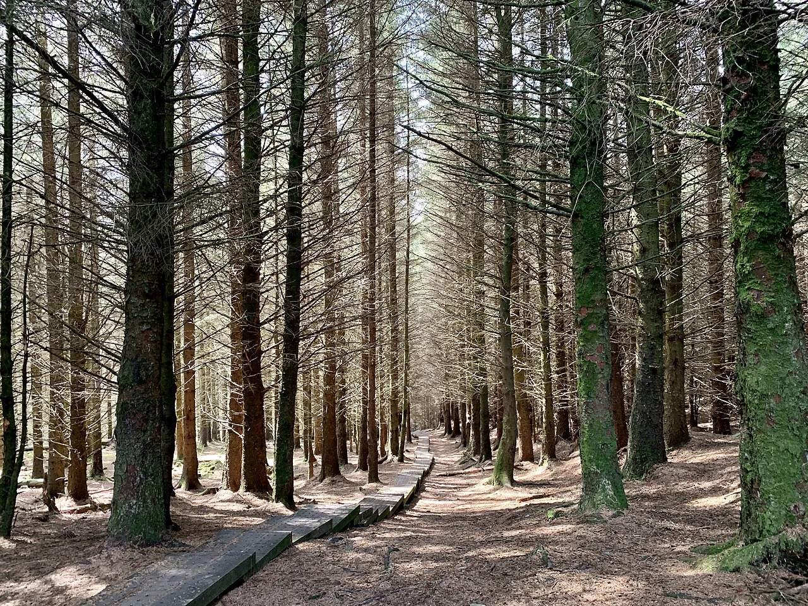

Green Space Access in Irish Cities
Access to green space isn't the same everywhere. Some Irish cities are doing well on this front, others not so much. The table below shows what percentage of people in each city can get to a green space within a 10-minute walk, how much green space there is per person, and how people rated their own wellbeing. The figures come from the Central Statistics Office (CSO) and Eurobarometer surveys.
| City / Town | Population | % with access ≤ 10 min walk | Green space per capita (m²) | Avg. wellbeing score / 10 |
|---|---|---|---|---|
| Dublin | 1,026,000 | 68% | 23 | 7.1 |
| Cork | 222,000 | 74% | 35 | 7.5 |
| Galway | 85,000 | 79% | 41 | 7.8 |
| Limerick | 102,000 | 71% | 30 | 7.3 |
| Waterford | 59,000 | 76% | 38 | 7.6 |
| Dundalk | 39,000 | 62% | 18 | 6.8 |
| Sligo | 21,000 | 83% | 52 | 8.0 |
| National Average | - | 73% | 34 m² | 7.4 / 10 |
What jumps out: Cities with more green space per person also tend to have higher wellbeing scores. Sligo and Galway both have over 40 m² per person, and they're also the two places where people reported feeling best. Dublin and Dundalk are at the other end. You can draw your own conclusions from that.
Time in Nature and Mental Wellbeing
We also looked at how much time people spend in green spaces each week and how that lines up with their mental health. A survey of over 2,000 Irish respondents found a pretty strong pattern. The more time people spent outdoors, the better they reported feeling.
| Weekly hours in green spaces | Respondents | Avg. stress level (1-10) | Avg. life satisfaction / 10 | % reporting good mental health |
|---|---|---|---|---|
| 0-1 hours | 420 | 7.8 | 5.9 | 48% |
| 1-3 hours | 610 | 6.4 | 6.7 | 63% |
| 3-5 hours | 530 | 5.1 | 7.4 | 78% |
| 5-10 hours | 320 | 3.9 | 8.1 | 89% |
| 10+ hours | 180 | 3.2 | 8.5 | 94% |
| Total | 2,060 | 5.4 (avg) | 7.1 (avg) | 72% (avg) |
The pattern is hard to miss. People getting 3 to 5 hours a week in green spaces are noticeably less stressed and more satisfied with life than people who barely go outside. A study published in Scientific Reports found that spending at least 120 minutes a week in nature is linked to better health and wellbeing.

Environmental Impact of Green Spaces
Green spaces aren't just good for us. They do a lot of quiet work for the environment too. Trees and plants soak up CO&sub2;, cool down hot city streets and give wildlife somewhere to live.
- A mature tree pulls in about 21.7 kg of CO&sub2; a year (Arbor Day Foundation)
- Parks can bring local temperatures down by 2 to 5°C in summer (US EPA)
- Urban trees filter out air pollutants and improve city air quality (US EPA)
- Green roofs and walls can cut a building's energy use by up to 25% (US EPA)